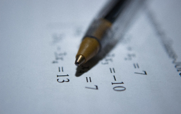
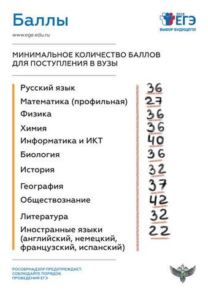

Сайт ГИА41. Руководство стиля
Атрибуты цвета и зависимые от типа темы классы
Для стилизации цвета используется отдельный файл colors.css из папки css. Он формируется из scss/parts/colors.scss. Темы лежат в scss/parts/colors/, там 6 вариантов тем: светлая, темная, оттенки серого светлая и темная, высококонтрастная черно-белая светлая и темная, какая-то из них импортируется в файл scss/parts/colors.scss. Все виды тем сформированы как css, поэтому в девтулз можно заменить css и увидеть другую тему.
Темная тема включается, если в ОС включена темная тема (если в браузере вообще доступен этот медиа-запрос), не включится при печати.
-
[bg="color-name"]На сайте предусмотрены 10 следующих цветов фона:
bg="primary"- Основной цвет - на элементах меню, кнопках
bg="secondary"- Дополнительный цвет - акцентный, на дополнительных элементах (дотсы, вкладки)
bg="primary-light"-
Оттенок основного цвета - для ховера
В светлой теме - светлее primary, в темной - темнее bg="secondary-light"-
Оттенок дополнительного цвета - для ховера
В светлой теме - светлее secondary, в темной - темнее bg="black"bg="dark"- В качестве фона шапки таблицы thead
bg="gray"bg="light"- Светлосерый цвет, в качестве фона для вкладок (.ui-tab), радиокнопок с Периодами проведения экзаменов
bg="white"bg="page"- Используется для body - цвет фоновой страницы и для элементов, которые должны быть цвета страницы
Описанные выще цвета задаются в циклах.
Отдельно задается цвет фона футера
bg="footer", который имеет hue от primary, и параметры saturation и light, отличающиеся от исходного bg="primary". -
[bg-active="color-name"]Применяется для элементов, у которых может быть активное состояние. Например, текущий раздел меню, выбранная вкладка, активный дотс для текущего слайда. Указанный цвет включается, когда элемент имеет класс .active.
Список цветов такой же, как и для bg (кроме [bg="footer"])
Реальные примеры
Всем элементам .ui-dot указаны атрибуты
bg="page" bg-active="secondary", второй элемент дотса имеет класс .active.Всем элементам .ui-tab указаны атрибуты
bg="light" bg-active="secondary", первая вкладка имеет класс .active. -
[bg-hover="color-name"]Применяется для задания цвета фона при наведении (:hover). Например, пункты меню, вкладка, дотсы, кнопки.
Список цветов такой же, как и для bg (кроме [bg="footer"])
Реальные примеры
Всем элементам .ui-dot указаны атрибуты
bg="white" bg-hover="secondary-light".Всем элементам .ui-tab указаны атрибуты
bg="light" bg-active="secondary-light".Кнопка submit - ей указан
bg="primary" bg-hover="primary-light" -
[font="color-name"]Благодаря особенностям CSS, цвет текста (color) задает также цвет границы (border-color), что используется, в частности, для рисования треугольника в кнопке .button.ui-play (Запустить видео).
Цветов текста на 2 меньше, чем цветов фона - отсутствует primary-light, secondary-light:
font="primary"-
Основной цвет - для ссылокСравнение цветов primary фона и шрифта (примените темную тему)
В светлой теме цвет такой же, как и [bg="primary"], в темной теме - светлее и ярче исходного [bg="primary"] в светлой теме
bg="primary" > font="primary"Памятка участникамСравнение цветов primary-light фона и шрифта (примените темную тему)
bg="primary-light" > font="primary"Памятка участникам font="secondary"-
Дополнительный цвет - акцентирует некоторые элементы (например, радиокнопки в Периоды проведения экзаменов)Сравнение цветов secondary фона и шрифта (примените темную тему)
В светлой теме цвет такой же, как и [bg="secondary"], в темной теме - светлее и ярче исходного [bg="secondary"] в светлой теме
bg="secondary" > font="secondary"Памятка участникамСравнение цветов secondary-light фона и шрифта (примените темную тему)
bg="secondary-light" > font="secondary"Памятка участникам font="black"-
Стоит на body
font="dark"-
Пример темно-серого текстаЛучше выглядит, когда жирный
font="gray"-
Пример серого текста
font="light"-
Используется для box-shadow
font="white"-
Используется на элементах меню и меню плиткойВ совокупности с классом .no-invert-font остается белым в темной темеВот пример без класса .no-invert-font - в темной теме шрифт инвертируется в черный
Описанные выше цвета задаются в циклах.
Отдельно после цикла задается
font="page"- цвет текста, как цвет фона страницыИспользуется для box-shadow .ui-scroll-arrowНе инвертировать белый цвет текста в темной теме
Могут быть случаи, когда белый цвет текста должен оставаться белым в темной теме - на элементах с цветным фоном (bg="primary", bg="secondary", bg="footer") или с картинкой на заднем плане. Для таких случаев предусмотрен класс .no-invert-font. В темной теме после блока правил с цветами текста следуют правила, в которых переопределяются цвета с для элементов с классом .no-invert-font.
-
[font-active="color-name"]Применяется для элементов, у которых может быть активное состояние. Например, выбранная вкладка, выбранный тип документов (фильтрация по документам), текущей страницы. Указанный цвет включается, когда элемент имеет класс .active.
Список цветов такой же, как и для font (отсутствует primary-light, secondary-light).
Реальные примеры
Всем элементам .ui-tab указан атрибут
font-active="white", атрибутfont="black"указан родителю ul.ui-tablist. Первой вкладке установлен класс .active.Стоит заметить, что элемент .ui-tab также имеет класс .no-invert-font. Правило
[font-active="white"].active.no-invert-font(в стилях _colors-dark.scss) будет значить, что в темной теме цвет шрифта кнопки в активном состоянии будет по-прежнему белым.Всем элементам li указан атрибут
font-active="white". Первому элементу установлен класс .active. -
[font-hover="color-name"]Довольно редко применяется, но тем не менее в стилях есть. Применяется, например, для вкладок, для кнопки .ui-play (в ней таким образом задается border) или ее контейнера.
Список цветов такой же, как и для font (отсутствует primary-light, secondary-light).
Реальные примеры
Всем элементам .ui-tab указан атрибут
font-hover="white", атрибутfont="black"указан родителю ul.ui-tablist.Стоит заметить, что элемент .ui-tab также имеет класс .no-invert-font. Правило
[font-hover="white"].active.no-invert-font(в стилях _colors-dark.scss) будет значить, что в темной теме цвет шрифта кнопки при наведении будет по-прежнему белым.Пример с кнопкой .ui-play (как в Видеоматериалах)
Контейнеру для button.ui-play указаны атрибуты
font="black" font-hover="white"(и класс .no-invert-font), самой кнопке атрибуты цвета шрифта не указаны.Треугольник рисуется с помощью границ (border). Цвет границ наследуется от цвета шрифта.
Текст внутри блока (для демонстрации изменения цвета шрифта при наведении) -
[border="color-name"]Список цветов такой же, как и для font (отсутствует primary-light, secondary-light).
Значения цветов secondary и primary в темной теме вычисляются также, как и для цветов шрифта.
Применяется для элементов форм, нижней границы вкладок .ui-tablist, дотсах .ui-dot и других элементах.
border="primary"border="secondary"border="black"border="dark"border="gray"border="light"border="white"
Отдельно после цикла задается
border="page"- цвет границы, как цвет фона страницыИспользуется для треугольника .ui-tab-triangle во вкладке .ui-tab -
[outline="color-name"]Применяется для всех элементов, доступных для взаимодействия - кнопки, инпуты, элементы меню, ссылки и т.п. Обводка становится видимой при фокусе на элементе.
Список цветов такой же, как и для font (отсутствует primary-light, secondary-light).
Значения цветов secondary и primary в темной теме вычисляются также, как и для цветов шрифта с единственным отличием - обводка полупрозрачная (rgba(color-value, .7)).
Примеры кнопок с outline
outline="primary"outline="secondary"outline="black"outline="dark"outline="gray"outline="light"-
outline="white"-
Не инвертировать белую обводку в темной теме
Могут быть случаи, когда белый цвет outline должен оставаться белым в темной теме - в блоках с цветным фоном (bg="primary", bg="secondary", bg="footer") или с картинкой на заднем плане. Для таких случаев предусмотрен класс .no-invert-font. В темной теме после блока правил с цветами текста и outline следуют правила, в которых переопределяются цвета с для элементов с классом .no-invert-font.
-
[blackout="color-name"]Затемнение, в темной теме не инвертируется , а наоборот становится темнее (уменьшается light в модели hsl). Полупрозрачный фон, задается с помощью opacity (и filter для IE8). В темной теме более непрозрачное, в плитке маленькой непрозрачность уменьшается при наведении.
blackout="primary"- На плитке на главной и в меню "ГИА / Информация"
blackout="secondary"- На плитке на главной и в меню "ГИА / Информация"
blackout="black"- На подложке для всплывающего окна, кнопок слайдера внутри него
Примеры с картинкой
blackout="primary"blackout="secondary" -
img.bright-less-in-darkДля светлых картинок в темной теме предусмотрено понижение яркости (чтобы не выжигало глаза). Применяется для памяток участникам и бланков.
Картинка с классом .bright-less-in-dark
Картинка без класса .bright-less-in-dark
-
.underlined-link[font="primary"][outline="primary"]Обычные ссылки - синий цвет, синий outline, подчеркивание убирается при наведении
Состояние :active
Цвет фона ссылки становится слегка синим (цвет шрифта font="primary" с прозрачностью)
Состояние :visited
В стилях прописано, что ссылки внутри main без класса .no-visited меняют цвет при посещении:
main a:not(.no-visited):visitedЦвет посещенной ссылки вычисляется как микс от цветов шрифта primary (большая часть) и secondary
Cсылка, которая меняет цвет при посещении
Эта ссылка после посещения не меняет цветДля того, чтобы посещенная ссылка не меняла цвет, надо добавить ей класс .no-visited